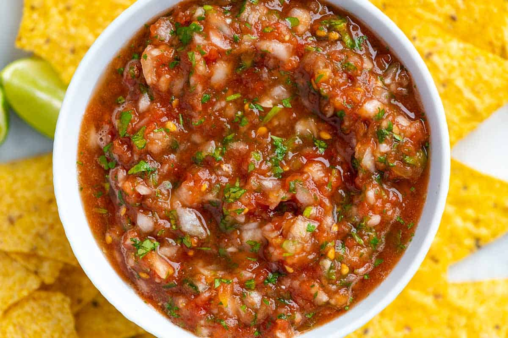

Salsa

Description
Spicy but balanced condiment
Ingredients
- 2 (15-ounce) cans fire roasted tomatoes or use 4 cups chopped fresh tomatoes (1 3/4 pounds)
- 1/3 cup chopped white or sweet onion (half medium onion)
- 2 medium cloves garlic (2 teaspoons minced)
- 1 to 2 medium jalapeño or serrano peppers, with stems, membrane and seeds removed
- 1 cup chopped fresh cilantro
- 1 to 2 medium limes
- 1/2 teaspoon fine sea salt, plus more to taste
Directions
- Place tomatoes into a colander set over a large bowl and allow to drain. Save drained juice to add back to salsa if it is too thick or save to add to soups or other dishes.
- Add chopped onion to a medium bowl and cover with cold water. Set aside for 10 minutes, drain, and then rinse.
- Add garlic to a blender or bowl of a food processor and pulse until chopped small. Scrape the sides, and then add the drained tomatoes, drained and rinsed onions, peppers, cilantro, 1/4 teaspoon of salt, and the juice of half a lime. Pulse until your desired texture. Taste, and then season with additional salt or lime juice. (We typically add 3/4 teaspoon of salt).
- This salsa improves with time so if you have the option, set it aside in the refrigerator for 30 minutes or more before serving. Store in the refrigerator up to a week.